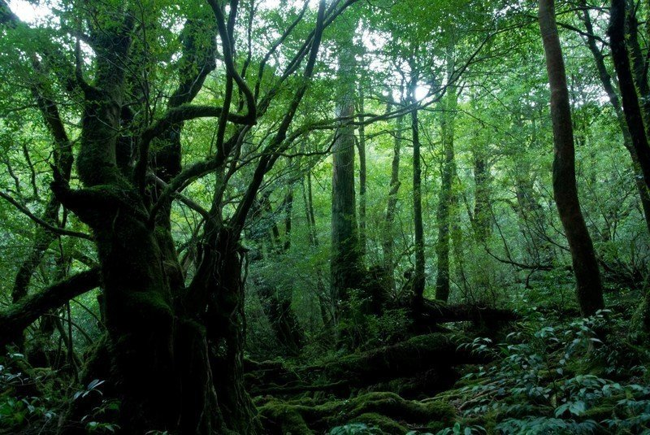

もしかしたら、明日には死んでしまっているかもしれない。
だから今抱えている不安や焦り、はたまた希望や願いなんてものはすべてにおいて意味を持たないんだ。そう思うと少し気が楽になる。何も考えないで、ただ前も後ろも見ないで生きていけることに。そして、今この瞬間も時間は平等に流れている。
今日も適切に仕事をこなし、忠之は帰りの道を歩いていた。26歳の忠之の人生には光も闇もなかった。
忠之の人生は平凡そのものだった。人並みに恋をして、周りに愛されて、そしてよくある経歴を辿り、今の会社に入った。ただ道が続いていて、そこをひたすら歩いてきただけだ。
時には嬉しいことも寂しいこともあったが、大きく感情を揺さぶられることもなかった。そんな人生がある程度繰り返されていくうちに死を迎える。そう思っていた。
忠之の人生を変えたのは親友の死であった。
忠之にとって唯一無二の親友は中学2年の時の同級生だった。かれこれ12年の歳月を共に過ごしたが、彼は突然交通事故を起こして死んだ。
それを聞いた時は戸惑った。そして、もうこんな親友には巡り合えないという確信と大きな悲しみが忠之を襲った。
それは多くの涙となって忠之の目を腫らした。心を暗鬱にさせた。仕事の処理を鈍らせた。でも悲しみはいつか忘れて、その存在も遠くなる。悲しみは癒える。そう信じ込んだ。
しかし、彼の死以来、忠之は失った存在の大きさを思い知らされた。
普通の道を歩むことは案外難しいことだったのかもしれない。そんな道を歩めたのはすべて周りのおかげなんだ。ましてや彼がいないと、たわいのないことや昔の青春話、愚痴だって言い合うことすらできない。
初めて自分の心の拠り所に気づいた。
いや、気づいたんじゃない。気づかないふりをしていただけだったのだ。
忠之は傷も癒えぬまま、屋久島に向かっていた。たまっていた有給休暇を使って。それは忠之の楽しみであった。
屋久島でしたいことはただ1つ。縄文杉を見ることだった。
本当は親友と2人で行くつもりの旅だった。親友が屋久島に行って縄文杉を見るんだと強く主張したので、忠之はその勢いに押される形で計画は着実に進んでいた。
しかし、親友がいなくなった今、忠之はこの旅がいつもの1人旅以上の大きな意味を持つと確信していた。
できれば1人で屋久島の森を歩きたかったが、登山などしたことない忠之にはさすがに無謀なことだった。仕方なく案内をしてくれるガイドを1人手配した。なるべくこの森を心静かに歩くことで、親友と本来過ごす時間をイメージしたかったからだ。
早朝4時半。天気は曇り。
1泊2日で申し込んだ忠之は、ぎこちない登山用の服装で身を固め、待ち合わせに指定された登山口で待っていた。忠之はいつものように早く着いてしまったので、周りの自然を見て考えごとにふけっていた。
親友の死からもう2週間……いや、まだ2週間か。ふとしたことで時の残酷さを思い知った。そして、時々寝袋や食料を詰め込んだバッグを肩から降ろして空を見上げ、耳を澄ました。でも何も聴こえなかった。たまに乾いた心の叫びが聴こえただけだった。
登山姿をばっちりと着こなした若い女性が現れたのは、集合時間の10分前であった。
黒いショートの髪型で、黒目が輝いて見える。少し丸い輪郭から覗かせる幼さに、忠之はなぜか懐かしさを感じた。お互いアイコンタクトをすると、軽く会釈をした。
「1泊2日、1名様でお申し込みいただいた瀬名さんですね？ 私は岸湊と言います。湊と呼んでください」
事務的なハキハキした口調であった。忠之も慌てて、
「はい、瀬名忠之です。よろしくお願いします」
と答えた。すると、湊は忠之の顔をジロジロ見て、こう言った。
「見た目が若い人にしかこんなこと言わないんですけど、ここでは敬語はなしにしません？」
人見知りしやすい忠之は一瞬、困惑した表情を浮かべた。その様子を見逃さなかった湊は、少し考えて
「森がこんなにゆったりとした時間を流してくれているのに、私たち自身で堅苦しい空気を作るのは意味のないことだと思わない？」
と笑って見せた。
「確かに。そうしよう」
湊の切り返しに妙に納得した忠之は、戸惑いながらもそう返事をした。
登山口に入り、2人はゆっくりと歩み始めた。森を歩いている間、湊は忠之にたわいのない話をした。さすがガイドだけあって湊は忠之の緊張をほぐしつつも、色々と屋久島の森の魅力を織り交ぜながら忠之をうまく日常の世界から切り離してくれた。
そして忠之は湊が自分と同じ26歳であること、湊は元々趣味が登山で、ふとしたきっかけで脱サラして屋久島のガイドになったことを知った。
それに湊の大好物はスパゲティ、特にミートスパゲティが好きなようだった。忠之がスパゲティによく合うワインを紹介すると、湊はそのワインの名前を反復しながらしばらく森の道を歩んでいた。
「実は私がガイドを始めたきっかけは、仲の良かった職場の同僚が仕事が苦しいという理由で自ら命を絶ったからなの」
忠之は明るい口調で躊躇なくそう話す湊を見た。
「そうなんだ」
と相槌を打つ。自然と親友の顔が浮かんだ。
「その時思った。私も同じ場所にいたらいつか自分で自分を殺めてしまうかもしれない。いや、きっとそうするって」
忠之は返事をせずに、話に耳を傾ける。
「だから知人のつてを辿って、元々好きだった登山の仕事に就いた。随分と無理を言ってしまったけど。その間、ほんの1か月ほどのことだったわ。こうして私は逃げるようにして東京を去った」
「単純な疑問なんだけど、そんな早く物事が進んで迷いはなかったの？」
「それが不思議なことに一切なかった。嘘のように聞こえるかもしれないけど、私はあの時導かれるようにこの場所に来たんだ」
しばらく道を歩むと、大きな切り株がある場所に着いた。そこで二人は軽い昼食を取ることになった。湊はさっきの話の続きを話し始めた。
「自殺の原因は、正確に言うと職場の人間関係だったんだ。明るい子で、そんな問題にはとんと無頓着で興味のなさそうな様子だったんだけど、私はあの子のふとした振る舞いでそれを感じ取った」
忠之はその時、湊と今の自分を重ね合わせた。
「差し支えなければでいいんだけど、具体的に人間関係のどんな問題だったの？」
「上司のいじめ」
湊はきっぱりとそう答えた。目線を逸らすことなく、そう言った。
「あの子はどんな人にも平等に接していた。だから、どんなに意地悪されても明るかった。でも、それがあの子を苦しませていたのかもしれない。人は他人の評価を見て、それが正当で絶対的な基準だと思いがちだけど、あの子はまさにそうだった。みんなの評価通りに振る舞うことに疲れても、その弱みを誰にも見せることができなかった」
「君にも？」
「そう。だから、私はあの子にとって本当の親友じゃない。私にとっては、あの子は唯一無二の親友だけどね」
「いや、君はその子にとって唯一無二の親友さ」
湊は少し驚いた顔をした。
「なんでそう思うの？」
「だって、その子にとってみればこの世からいなくなってもなお、自分の存在や本当の気持ちをこうして今日初めて会った男にも分かるように話してくれてるじゃないか。それは親友にしかできないことさ」
湊が何か反論しようとして口を動かそうとしたが、その瞬間に忠之は
「誰がなんと言おうともね」
と付け加えると、湊は諦めた様子で頷いた。そして、ありがとうと呟いた。
昼食を取り終わり、再び2人は歩み始めた。途中小雨が降って2人を濡らしたが、屋久島はよく雨が降ると聞いていたので忠之は驚きもしなかった。
2人は話すこともなくなり、湊のマニュアル通りの観光案内の説明の時以外は言葉を交わさなかった。しかしそれは退屈な時間などではなく、忠之には必要なことだった。親友とのあるべき時間をただ1人静かに取り戻していた。
そして、忠之は訳もなくその親友のことを湊に話した。湊は冷静にその話を聞きながら、縄文杉への道を正確に案内した。
2人はついに縄文杉のもとにたどり着いた。
忠之は言葉を失った。圧巻だった。有無を言わさず、すべてを包み込むような不変の温かさや厳しさを直感的に感じ取れた。自然と涙が零れ落ちた。親友の顔が浮かんだ。
「この縄文杉の影には多くの植物がなってる。果てしない時間、この杉の木は多くの生命を守ってきた。そして、縄文杉もこの小さな植物たちによって生かされてきた。だから、2つの独立した関係は決して恵む側と恵まれる側ではなく、相互に支え合ってきたんだと思う。これまであなたがこの杉の木のように誰かを守ったり、または小さな植物となって誰かの杉の木に守られてきたように」
湊は優しい声でそう教えてくれた。
「この杉の木のように？」
「そう。あなたと彼の関係のように。死は決して最後の別れじゃない」
「でも、会える保証もない。少なくともこの現世ではもう会えない」
忠之は伏し目がちに呟く。
「そうだね。私は神様を信じないから、生まれ変わりはないと思ってる。でも、死んだ後の世界はあると思うよ」
忠之は顔を上げた。湊は続ける。
「だって、この世界では今から死ぬんでさよならしましょうとはいかないでしょ？ 最後の別れなしに多くの人は死別を繰り返している。だから、死んだ後もどこかで再会しないと神様が許さないと思うんだ。例えば自分自身が80歳で死んでヨボヨボな状態で、相手が早世して若いままであっても会う権利はあるはず。お互いの容姿を見て、懐かしんだりするのもいいと思うな」
「でもさっき君は神様は信じないって……」
「あ、そうだったね。でも、人にとっての神様なんてそんな都合のいい存在でもいいんじゃないかしら？」
そう言って、忠之と湊は笑い合った。
ふっと気持ちが軽くなったような気がした。
そうして2人はゆっくりと、時折足を休ませながら今晩泊まる小屋を目指した。忠之は何度も頭の中で縄文杉と親友の顔を思い浮かべた。
もしあいつがあれを見ていたら、なんて言っていただろう？ そんなことを考えていると、湊は忠之の前を歩きながら漠然としたことを尋ねた。
「この旅が終わったら、あなたはこれからどうするの？」
忠之は湊の後ろ姿を見ながら答える。
「まだ何も考えてないんだ。でも恐らく……推測だけれど、また惜しげもなく日常の波が押し寄せてきて、それが今僕らが話していることすらもすっかり奪い去ってしまうかもしれない」
湊はその言葉を受け止めると、大きく息を吸って応える。
「じゃあしっかりと書き留めておかなくちゃね。『僕の素晴らしい人生はまだまだ続くんだ』って」
そう言って湊は振り向き、白い歯を見せた。忠之はその微笑みを受け止め、屋久島の空を見上げた。いつの間にか雨も降り止んで星が輝いている。
森の音に耳を澄まると、木々の揺れる音に鳥のさえずり、水のせせらぎが聴こえた。自分の足音が森の茂みに響く。
歩き続ける限り、光を求め続ける限り、僕らは希望を持つことができるのかもしれない。
そう思った瞬間、遠くの方で複雑に絡み合った感情とも似つかないものが、今は安息の地を見つけたかのように静かに寝息を立てている音が、かすかに聴こえてきた。